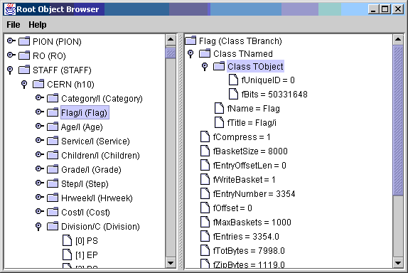

The package allows Java to read any Root file, including files containing user defined objects, by exploiting the StreamerInfo objects embedded in Root files. If you use the default Root streamer mechanism then the StreamerInfo objects are created by Root automatically. (If you write your own object streamer for Root then you must also provide a StreamerInfo object for your class, or the Java interface will not be able to read it). Since the StreamerInfo objects were extensively redesigned for Root 3.0, the current Java IO package can only read files created with Root 3.00/6 or later.
(on Windows you can just double-click on the root.jar file). A screen shot of the application is show below. The pane on the left shows the directory structure of the file. The object browser knows how to navigate directories (TDirectories), trees (TTrees and TBranches) and these will all be shown in the left pane. Clicking on any object in the left pane will cause the details of the object to be shown in the right pane. The right pane knows how to follow embedded pointers to other objects.java -jar root.jar

It is a good idea to try out the Object Browser on any root file you are interested in using, before trying any of the examples below. If the Object Browser is not able to display your file correctly, then you have probably discovered a bug in the Java package, and should report it. It is unlikely any of the following example programs will work if the object browser does not work.
set CLASSPATH=.;root.jar (windows)
setenv CLASSPATH .:root.jar (unix, csh)
Root files can contain many objects, each referenced by a key (TKey). To access a particular object you must know its key. You can use the RootObjectBrowser described above to browse the contents of a file and discover what keys are contained in it. In this example we access the Histogram whose key is "mainHistogram":
import hep.io.root.*;
import hep.io.root.interfaces.*;
import java.io.IOException;
public class RootTest
{
public static void main(String[] argv) throws IOException
{
RootFileReader rfr = new RootFileReader("Example.root");
TKey key = rfr.getKey("mainHistogram");
TH1 histogram = (TH1) key.getObject();
double entries= histogram.getEntries();
System.out.println("entries="+entries);
}
}
To compile and run this example just issue the commands:
javac RootTest.java java RootTestA more interesting example which actually displays histograms is also available.
Before reading the file you must first use the Interface Builder to create the Java Interface for the user-defined objects contained in your file. To do this run the following command:
java hep.io.root.util.InterfaceBuilder Moy.rootThis should create a file hep/io/root/interfaces/Moyennes.java. (The sub-directories follow Java's normal convention of putting source files into subdirectories corresponding to the package). If you look inside the file created you will see that it looks like this:
package hep.io.root.interfaces;
public interface Moyennes extends RootObject, TObject
{
/** */
int getSize();
/** */
double[] getMoy();
/** */
double[] getSig();
/** */
int[] getNEntries();
/** */
int getBid();
public final static int rootIOVersion=1;
}
As you can see that the InterfaceBuilder has created an interface with accessor methods for each data member inside the user defined object (Moyennes in this case). Using this interface it is now easy to write a routine to access the objects from the file:
import hep.io.root.*;
import hep.io.root.interfaces.*;
import java.io.IOException;
public class MoyTest
{
public static void main(String[] argv) throws IOException
{
RootFileReader rfr = new RootFileReader("Moy.root");
TKey key = rfr.getKey("MeanPedBF_0");
Moyennes moy = (Moyennes) key.getObject();
// Now we have the user define object we can call any method
// we like.
int size = moy.getSize();
System.out.println("Size="+size);
}
}
You can compile and run this routine by typing:
javac MoyTest.java java MoyTest
As before the first step is to create the Java Interfaces corresponding to the user defined objects. You do this by issuing the command:
java hep.io.root.util.InterfaceBuilder Event.rootNow you can compile and run the following program:
import hep.io.root.*;
import hep.io.root.interfaces.*;
import java.io.IOException;
import java.util.*;
/**
* An example of how to read events from a Root file.
* @author tonyj
* @version $Id: index.html,v 1.10 2003/03/23 02:37:06 tonyj Exp $
*/
public class EventTest
{
public static void main (String args[]) throws IOException
{
RootFileReader reader = new RootFileReader("Event.root");
TTree tree = (TTree) reader.get("T");
TBranch branch = tree.getBranch("event");
int n = branch.getNEntries();
System.out.println("nEntries="+n);
long start = System.currentTimeMillis();
for (int i=0; i<n; i++)
{
Event e = (Event) branch.getEntry(i);
List l = e.getTracks();
System.out.println("NTracks="+e.getNtrack()+" "+l.size());
Iterator it = l.iterator();
while (it.hasNext())
{
Track t = (Track) it.next();
double px = t.getPx();
//System.out.println("px="+px);
}
}
long stop = System.currentTimeMillis();
System.out.println("ms/event="+((stop-start)/n));
}
}
If you compare this program to the equivalent Root script, you will see that in the Java example it is not necessary to say in advance which branches of the tree should be read. This is because the hep.io.root package returns "Hollow Objects" for Event and Track, and the data is only fetched from the file as needed by calls to accessor methods (e.g. getXXX()) on these objects. This means Java gains the efficiency of only reading the required branches without the user having to explicitly list the branches. (The efficiency gains made possible are not fully realized in the current implementation, due to the early nature of this release, but in subsequent releases we expect the speed of this demo to increase dramatically).
Tony Johnson - Version: $Id: index.shtml,v 1.11 2001/06/11 21:32:53 tonyj Exp $